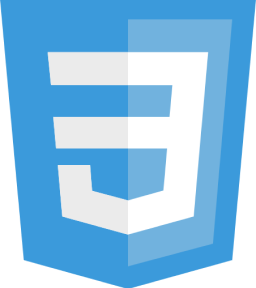
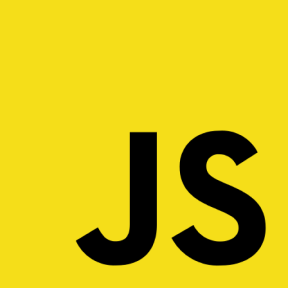
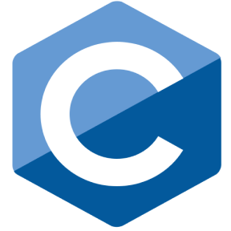
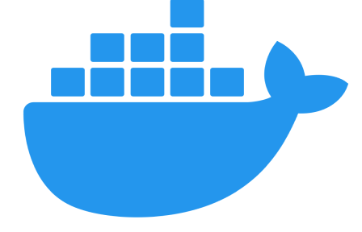
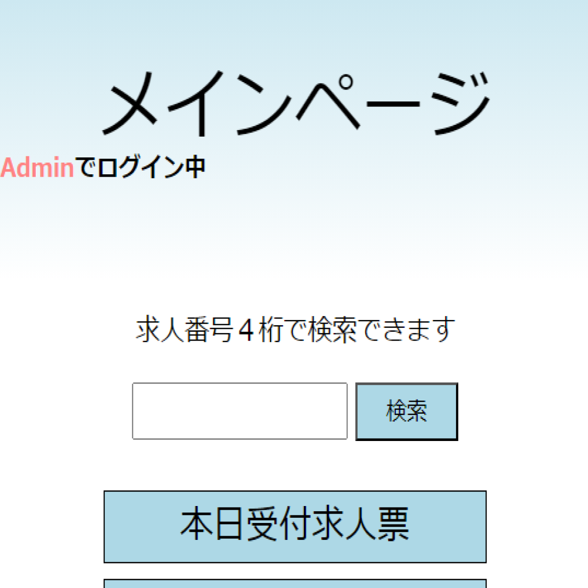
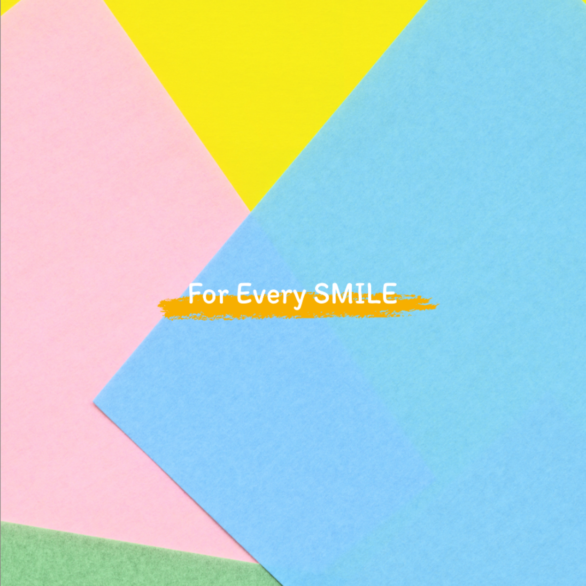

Yamashita Takumi 大学生。WEBアプリ開発を学んでいます！ PR すべての笑顔のために。 生活がより楽になるようなアプリ開発をしたいと思っています。 お客様目線で完璧なアプリなのはもちろん、保守性などエンジニア目線でも完璧なアプリを制作できるよう、日々学習しています。 どうぞよろしくお願いいたします。 Skills クリックで各wikipediaにアクセスできます。     基本情報技術者試験、危険物乙種全類、計算技術検定１級満点合格
チャットアプリ サーバを提供してくれる民間企業から助言をもらい、市役所へMatterMostを導入しました。 市役所が使いやすいように管理サイトを制作しました。 制作期間：2021年4月~2022年9月(約6ヶ月) クリックで各wikipediaにアクセスできます。
 求人票閲覧サイト 在学していた高校に求人票を自宅からでも閲覧できるサイトを制作しました。 主な使用言語はPHPで、Laravelを使用しています。 制作期間：2021年9月~2022年2月(約7ヶ月) クリックで各wikipediaにアクセスできます。
 PortFolio 実力試しも兼ねて可愛い印象を持つポートフォリオを制作しました。 コードを綺麗にしたりなど様々な工夫を行ない、実務に近い制作をしたと思います。 制作期間：2023年7月~2023年7月(約1週間) クリックで各wikipediaにアクセスできます。